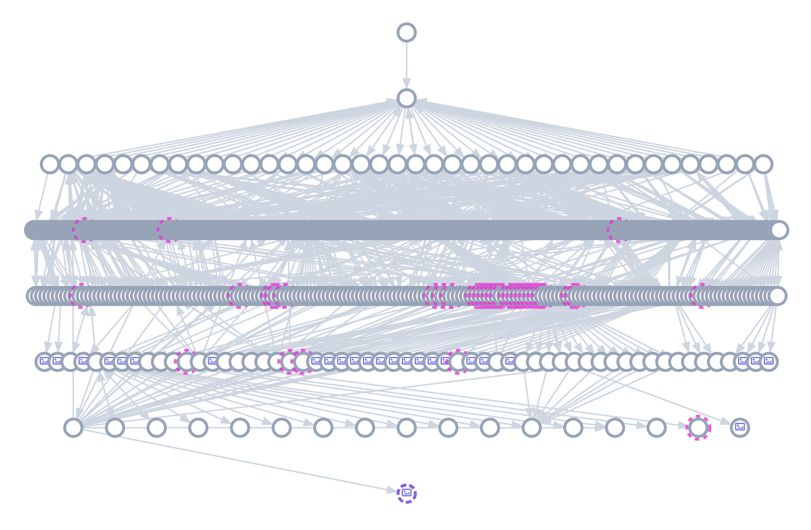
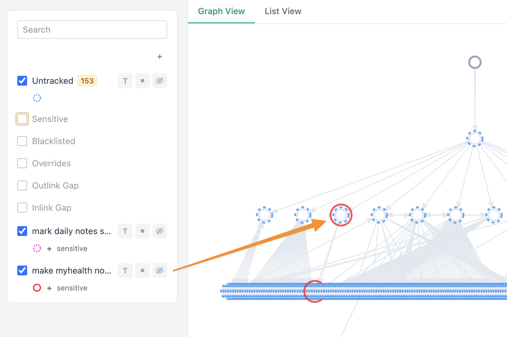
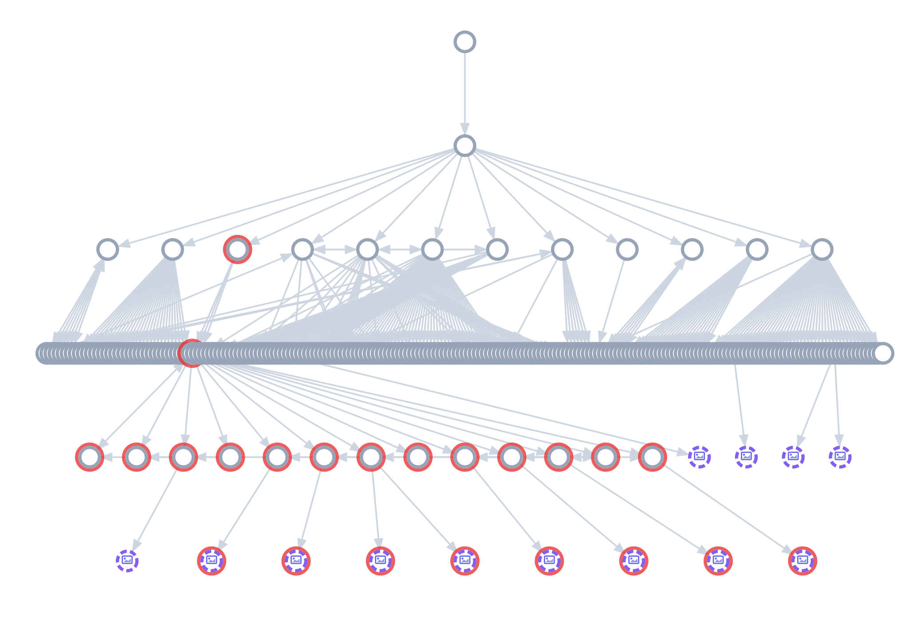

example showing my health site and one page in it
I have been working with a functional medicine specialist on my gut problems for about a year. I keep notes about it to help orient us and drive my care.
for example, we have a meeting today. We're going to talk about various things, but also review my current supplementation. To that end, I shared this with her earlier today in preparation: link not tracked.
This is the site that she sees:

But when I share that page with you, Meadow highlights it as being sensitive, so it can't be accidentally bulk-added. So I can carefully add it and a few of the associated pages (so it's not just all broken links) just to show you what I'm talking about.

So I decide... "I'll just share this much"
